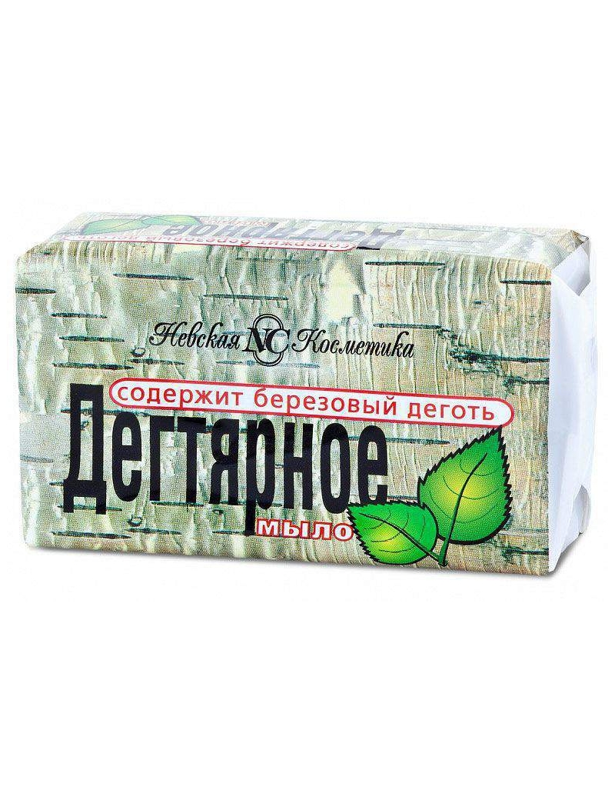

Kosmetika | Dekoratyvinė kosmetika | Urmas
2020.10.26 12:40
+370 37 350 662 I-V 9:00-18:00 VI 9:00-17:00 VII 9:00-15:00 Prekybos miestelio planas lt en APIE URMĄ
Informacija Lankytojui
APIE URMĄ Naujienos Renginiai Darbo laikas Nedarbo dienos Lojalumo programa Vaistinės Bankomatai Kavinės / restoranai Privatumo politikaTurgūs
Centrinis Kauno turgus Naktinis turgus Tarptautinis senturgis „Laiko ratu” Bagažinių turgusPastatai
Geltonoji galerija Baltoji galerija Rytinė galerija Vakarinė galerija Raudonasis pasažas ,,Urmas station”Aktuali informacija
KONTAKTAI Stilius, mada Maisto klubas Karjera Įgyvendinti projektai Urmo geležinkelio stotis Prekybos miestelio planas Elektromobilių įkrovimo stotelės registracija VERSLUIVerslui
Prekybinių patalpų nuoma Sandėlių nuoma Reklamos paslaugos Kodėl Urmas? Faktai, skaičiai, statistika Lokacija, vieta Urmo radijas KONTAKTAI Menu Skip to content Akcijos Naujienos Turgūs Renginiai Prekių katalogas ParduotuvėsKosmetika
Pradinis / Katalogas / grozio-prekes / KosmetikaPARDUOTUVĖS PAVADINIMAS VIETA PLAČIAU MAISTO PAPILDAI RYTINĖ GALERIJA 19 SALĖ, 12 vieta PLAČIAU GROŽIO PREKĖS VAKARINĖ GALERIJA 5 SALĖ, 63 PARDUOTUVĖ PLAČIAU MAISTO PAPILDAI VAKARINĖ GALERIJA 5 SALĖ, 62 PARDUOTUVĖ PLAČIAU GROŽIO PREKĖS VAKARINĖ GALERIJA 5 SALĖ, 51 PARDUOTUVĖ PLAČIAU KOSMETIKOS PREKĖS VAKARINĖ GALERIJA 5 SALĖ, 27 PARDUOTUVĖ PLAČIAU PRESTIGE PARFUMS VAKARINĖ GALERIJA 5 SALĖ, 23 PARDUOTUVĖ PLAČIAU VYRIŠKA KOSMETIKA RYTINĖ GALERIJA 10 SALĖ, 61 VIETA PLAČIAU KOSMETIKA IR BIŽUTERIJA VAKARINĖ GALERIJA 4 SALĖ, 56 VIETA PLAČIAU KOSMETIKA IR BIŽUTERIJA VAKARINĖ GALERIJA 4 SALĖ, 51 VIETA PLAČIAU KOSMETIKA IR PARFUMERIJA VYRAMS TRAUKINUKAI 4 VAGONAS, 2 PARDUOTUVĖ PLAČIAU CASCADA GELTONOJI GALERIJA 1 SALĖ, 1 PARDUOTUVĖ PLAČIAU ŠVAROS PREKĖS RYTINĖ GALERIJA 14 SALĖ, 1 PARDUOTUVĖ PLAČIAU JUMILA RYTINĖ GALERIJA 13 SALĖ, 22 PARDUOTUVĖ PLAČIAU KOSMETIKA IR PARFUMERIJA RYTINĖ GALERIJA 12 SALĖ, 4 PARDUOTUVĖ PLAČIAU INNEKA RYTINĖ GALERIJA 12 SALĖ, 3 PARDUOTUVĖ PLAČIAU
Kosmetika buvo naudojama jau seniausiais laikais tokiose didingose civilizacijose, kaip senovės Egiptas ar Mesopotamija, o plačiai aprašyto Kleopatros grožio paslaptimi buvo ne kas kita, bet įvairūs veido aliejai ir kremai. Bėgant laikui keitėsi kosmetikos sąvoka ir dėl išsiplėtusios rinkos šiandien ji turi kur kas platesnę reikšmę nei seniau. Pavadinimas iš esmės apima visas kūno priežiūros priemones, kuriomis stengiamės pagražinti ar pakvėpinti savo kūną.
Kas yra kosmetika?
• Dekoratyvinės kometikos priemonės . Tai lūpų dažai, pudra, skaistalai, akių vokų šešėliai, antakių ar akių linijos pieštukai, blakstienų tušas ir panašūs produktai, skirti veido dažymui.
• Kremai . Jie gali būti universalūs ar skirti konkrečiai kūno vietai: paakiams, veidui, kojoms, pėdoms, rankoms.
• Aliejai. Tai – kosmetika, skirta plaukams ar odai. Įvairūs aliejai yra bene natūraliausios sudėties kūno ar plaukų priežiūros priemonės, todėl jų efektyvumas gali būti akivaizdus.
• Kvepalai. Labai individualus pasirinkimas, nes kvapas, kurį pasirenkame, tarsi atspindi mūsų gyvenimo būdą ar asmenybę.
• Šampūnai, dušo želė, muilas, kūno pilingas ir kitos asmens higienos priemonės.
Sudėtis svarbiau nei pakuotė
Šiandien egzistuoja labai daug kosmetikos ženklų, todėl rinktis tikrai yra iš ko. Nepaisant to, tai tampa ir tam tikra atsakomybe, juk nesinori ant kūno odos ar plaukų dėti sintetinius, neaiškios sudėties ingredientus. Žinoma, visiškai to išvengti sunku, tačiau gerai apgalvojus ir itin domintis produktais – tikrai įmanoma. Nors vartotojiškumas skatina rinktis gražią pakuotę ir nesidomėti prekės sudėtimi, atminkite, kad ne visada kaina ir, juo labiau, graži pakuotė nulemia produkto sudėtį ir efektyvumą. Todėl prieš renkantis bet kokio tipo kosmetiką , ar tai būtų dažai, ar tiesiog kūno higienos ar priežiūros priemonės, atkreipkite dėmesį į:
• gamintoją – geriausia pasiskaityti apie kompanijos tikslus ir produktų kokybę internete, spaudoje. Jei gamintojas nėra žinomas, paskaitykite atsiliepimus įvairiuose forumuose, paklausinėkite pažįstamų ar šeimos narių.
• sudedamąsias dalis – perskaitykite sąrašą, kokie ingredientai įeina į konkretaus kremo, šampūno, dantų pastos ar dušo želė sudėtį. Rinkitės natūralias sudedamąsias dalis su mažiau cheminių elementų.
• ne viskas, kas gausiai putoja yra gerai – tai taikoma tik tokioms prausimosi priemonėms, kaip dušo želė, šampūnas ir pan. Vis dar gaji nuomonė, kad kuo daugiau prausimosi priemonė putoja, tuo ji geresnė, tačiau tai nėra tiesa. Kuo kosmetika natūralesnė, tuo ji turi mažiau sintetinių sudedamųjų dalių, kurios dažnai ir sukelia didesnį priemonės putojimo efektą.
Įvairaus tipo kosmetikos gaminių galite įsigyti ir „Urmas“ prekybos miestelyje. Platus kvepalų, kūno bei plaukų priežiūros priemonių asortimentas leis išsirinkti kiekvienam. Užsukite pas mus!
Sužinokite pirmi. Užsisakykite URMAS naujienas.
Klientui
Akcijos Naujienos Renginiai Darbo laikas Nedarbo dienos Lojalumo programa Kaip atvykti? Karjera Maisto klubas KONTAKTAIBagažinių turgus Bankomatai Centrinis Kauno turgus Kavinės / restoranai Naktinis turgus Tarptautinis senturgis „Urmas station“ Vaistinės Paštomatai
Verslui
Prekybinių patalpų nuoma Sandėlių nuoma Reklamos paslaugos Kodėl Urmas? Faktai, skaičiai, statistika Lokacija, vieta Urmo radijasKaip Mus rasti?
BENDRAUKIME
Informacija telefonu: (8 37) 350 662 Urmas darbo laikas: I-V 9:00-18:00 VI 9:00-17:00 VII 9:00-15:00 Siekdami pagerinti Jūsų naršymo kokybę, statistiniais ir rinkodaros tikslais šioje svetainėje naudojame slapukus (angl. cookies). Ar sutinkate, kad slapukai būtų naudojami informacijai apie Jūsų naršymo istoriją kaupti? Sutinku | Nesutinku | Privatumo politika